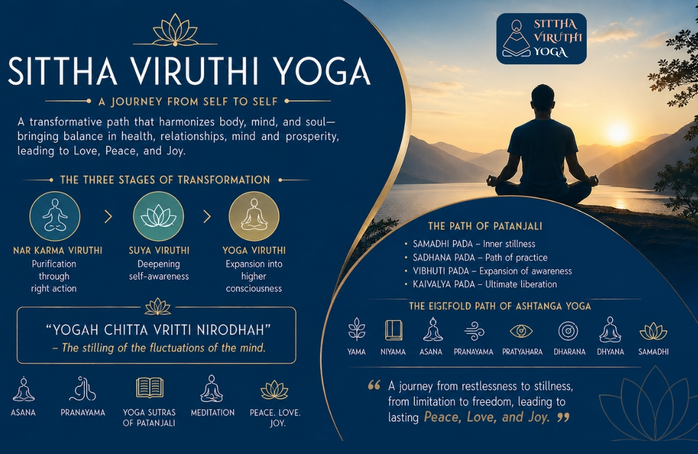

Sittha Viruthi Yoga – A Journey from Self to Self

Sittha Viruthi Yoga is a transformative path that harmonizes body, mind, and soul—bringing balance in health, relationships, mind and prosperity, leading to Love, Peace, and Joy.
Structured across three levels — Narkarma Viruthi, Suya Viruthi, and Yoga Viruthi — the journey culminates in the wisdom of the Yoga Sutras of Patanjali by Patanjali.
Once a month on Sundays Patanjali Yoga Sutras along with Asanas and Pranayama and Meditation is imparted to the participants. Here, yoga is experienced as an inner science: “Yogah Chitta Vritti Nirodhah”—the stilling of the fluctuations of the mind. Through Asana, Pranayama, and the deeper teachings of Ashtanga Yoga, participants move from outer discipline to inner stillness, gaining clarity, resilience, and spiritual awareness. This is not just practice—it is transformation.
Sittha Viruthi Yoga – The Science of Inner Transformation
Sittha Viruthi Yoga is a sacred and structured journey designed to elevate human life from conditioned patterns to conscious living. It enables a holistic transformation—physical health , emotional balance, clarity of mind, enriched relationships, and aligned prosperity—ultimately leading to Love, Peace, and Joy.
The path unfolds through three progressive stages:
- Nar Karma Viruthi – Purification through right action
- Suya Viruthi – Deepening self-awareness
- Yoga Viruthi – Expansion into higher consciousness
At the advanced Yoga Viruthi level, participants are initiated into the timeless wisdom of the Yoga Sutras of Patanjali by Patanjali—a profound spiritual text that reveals yoga as a precise science of consciousness.
The Science of Yoga
The Sutras define yoga as: “Yogah Chitta Vritti Nirodhah”—the cessation of mental fluctuations. They systematically explain:
- Chitta (the field of the mind)
- Vrittis (thought patterns)
- Samskaras (deep-rooted impressions)
Through awareness and disciplined practice, the seeker transcends these patterns and realizes the true Self (Purusha).
The Path of Patanjali
The teachings are organized into four stages (Padas):
- Samadhi Pada – inner stillness and meditative absorption
- Sadhana Pada – the path of disciplined practice
- Vibhuti Pada – expansion of awareness and inner potential
- Kaivalya Pada – ultimate liberation
Yama, Niyama, Asana, Pranayama, Pratyahara, Dharana, Dhyana, Samadhi—a journey from outer alignment to inner awakening.
The Sutras also identify the Kleshas—Avidya, Asmita, Raga, Dvesha, and Abhinivesha—as the root causes of suffering, and offer the twin tools of Abhyasa (consistent practice) and Vairagya (detachment) for transcendence.
Once a month on Sundays the following program is held regularly : A Gentle Reflection- When we take responsibility, do we fully understand it?
- When others trust us, how do we honour that trust?
Program Structure
- Morning Sessions: Asana and Pranayama to align body and life-force
- Afternoon Sessions: Systematic study of the Sutras—explained with clarity, depth, and practical relevance, supported by reflection and interaction. Deep Meditation is given at the concluding Session.
Participants are guided step by step to understand, experience, and integrate these teachings into daily life.
Relevance in Modern Life
The wisdom of the Sutras finds powerful expression today:
- Cultivates mental clarity and emotional stability
- Reduces stress and inner conflict
- Enhances focus amidst digital distractions
- Strengthens ethical living and relationships
- Enables action with detachment and balance
- Builds resilience through conscious awareness
The Transformation
Sittha Viruthi Yoga is not merely a practice—it is an awakening. A journey from restlessness to stillness, from identification to awareness, from limitation to freedom. It leads the seeker to the ultimate state of Kaivalya—where one abides in their true nature, experiencing lasting Peace, Love, and Joy.